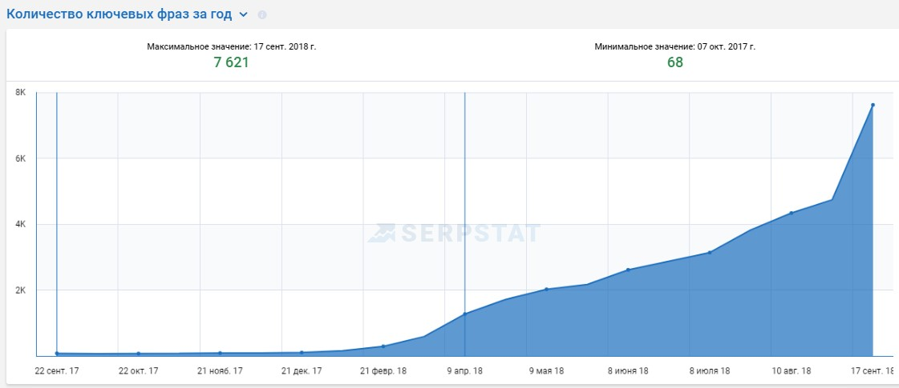
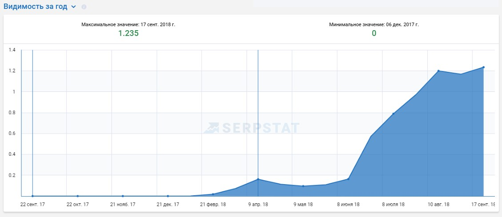
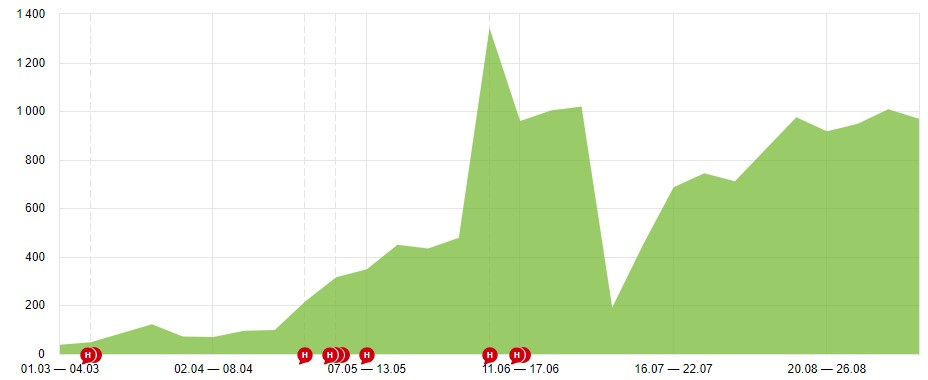

Рост трафика в 20 раз портала новостроек
от агентства Digital Upgrade — Одесса
Продвижение портала новостроек
Задачи:
- Рост видимости и охвата сайта
- Увеличение поискового трафика
Сложности с которыми столкнулись
- Сложности в оптимизации шаблонных мета тегов для страниц сайта. В силу технических особенностей CMS не удалось разместить созданные шаблоны. Для оптимизации тегов понадобилось анализировать новые размещенные теги (не по шаблон) и добавлять вхождения упущенных тематических/околотематических фраз/слов.
- Большое количество ошибок по данным Вебмастеров. Не оптимизированы URL страниц пагинации (большое кол-во дублей и технических URL).
Стратегия продвижения. Как решали сложности
- Проведен общий технический и SEO аудит сайта. Собраны данные по индексации страниц их качество. Отправлен в реализацию большой список заданий технического характера (оптимизация системных файлов, валидация кода, ошибки 50*, дубли, 404-ые, хлебные крошки и др.)
- Была проанализирована ниша. Собраны основные конкуренты и данные по ним (ряд коммерческих факторов, юзабилити, ссылки навигации, ссылочный профиль, создание новых страниц, дополнительный функционал сайтов)
- Проведена группировка по кластерам и распределение ключевых запросов на посадочные страницы.
- Созданы новые страницы навигации для удобства поиска ЖК и расширение семантического охвата на базе данных по конкурентам.
- Составлены ТЗ, написаны, размещены тексты на всех основных и новых страницах структуры.
- Составлены шаблоны мета тегов для всех типов страниц. Размещены по измененным шаблонам. Доработаны в соответствии с возможностями CMS.
- Проводилось размещение обратных ссылок и активное добавление страниц в индекс ПС путем ручной переиндексации.
- Основной трафик из ПС идет на страницы Жилых комплексов. С клиентом определен список приоритетных ЖК для продвижения. Для каждой страницы ЖК были собраны группы запросов и размещены тексты по ТЗ
Этапы работ
- В первую очередь был проведен технический аудит и реализация ряда стандартных задач по внутренней оптимизации
- Создание файла robots.txt, XML/HTML
- Создание/оптимизация 404-ой страницы
- Удаление дублей страниц, настройка редиретов
- Оптимизация URL ЧПУ
- Устранение “Заблокированных ресурсов” по Google
- Запрос на тестирование сервера по факту плохой скорости и ошибок 50*
- Оптимизация кода HTML (мета теги после ‘head’ + Валидация по W3.org)
- Проверка и оптимизация заголовков h1
- Убрали циклическую ссылку с Главной страницы
- Создание общих страниц для организации перелинковки
- Создание/размещение ссылок навигации на страницах сайта
- Оптимизация ХК
- Реализация микроразметки
- Оптимизация тегов canonical; prev; next для страниц пагинации
- Подготовка мета тегов на типовые страницы
- Правка вывода хлебных крошек
- Работы по удалению ошибочных страниц из индекса
- Скрытие пустых страниц “без объектов” для индекса ПС
- Другие вытекающие задачи
- Второй этап – подготовка ТЗ и размещение релевантных текстов. Проводились аналитические работы по изучению текстов на аналогичных страницах конкурентов. Изучалась структура заголовков h1-h6. Дополнительно собирались LSI слова для каждой группы запросов.
- Далее – ссылочные работы. Были проанализированы 10 ссылочных профилей прямых конкурентов. Отобраны только трастовые тематические доноры. Со третьего месяца продвижения подключили наращивание обратных ссылок. Ручная переиндексация страниц дала свой результат
- Создавались новые посадочные страницы для навигации и поиска ЖК по регионам, по стоимости, классу жилья, (смешанные страницы типа: “ЖК по регионам+стоимость”). Собирались группы запросов. Проводилась текстовая аналитика, готовилось ТЗ. Размещали тексты.
Результаты работ

Оптимизация сайта под разработанное семантическое ядро, а также написание статей обеспечило увеличение количества фраз в поиске рост в 400%.
Увеличение видимости сайта в ПС Яндекс

Продвижение сайта по запросам позволило получить положительную динамику видимости сайта в органике и увеличить видимость более чем на 700%
Рост органического трафика

Через 2 месяца трафик вырос более чем в 10 раз.
Взрывной рост связан с подключением ссылочного блока работ (плавный прирост обратных ссылок с тематических ресурсов собранных из ссылочных профилей прямых конкурентов)
SEO от агентства Digital Upgrade Одесса.
Контакты:
(093) 438-6770